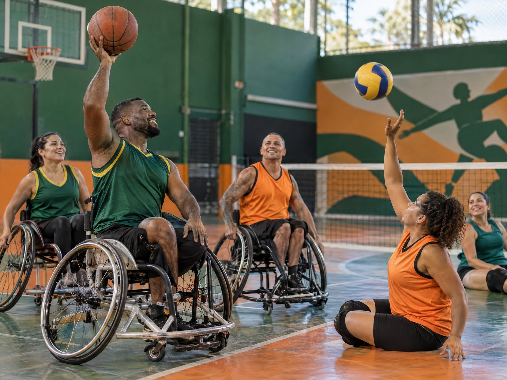

Página 2 · catálogo esportivo
Modalidades paralímpicas e esporte adaptado
Cada modalidade tem regras e recursos próprios. Este panorama apresenta oito esportes; para regras atualizadas e classificação, consulte as entidades oficiais.

Prática e diversidade
Há mais de um jeito de entrar em quadra.
Equipamentos, regras e apoios variam entre as modalidades. A melhor escolha é aquela que combina com o interesse, a rotina e as necessidades de cada pessoa.
Encontre uma modalidade
Use a busca por nome, tipo ou característica. O filtro é opcional e funciona com teclado.
Provas de pista e campo, incluindo corrida, salto e arremesso, com classes esportivas distintas.
- Individual
- Pista e campo
- Classes esportivas
Esporte coletivo em quadra, com cadeiras esportivas e classificação funcional.
- Coletivo
- Quadra
- Cadeira esportiva
Provas em piscina com adaptações de largada e orientação conforme a classe e a necessidade do atleta.
- Piscina
- Individual e revezamento
- Classes S
Modalidade criada para pessoas com deficiência visual; a bola tem guizos e a orientação depende do som.
- Deficiência visual
- Quadra
- Coletivo
Jogo de precisão que pode utilizar calha e assistência, conforme a classe esportiva e as regras.
- Precisão
- Indoor
- Classes BC
Esporte coletivo de quadra com cadeiras específicas e regras de contato controlado.
- Coletivo
- Quadra
- Cadeira esportiva
Variação do voleibol com rede e dimensões adaptadas, disputada com os atletas em contato com o solo.
- Coletivo
- Quadra
- Rede adaptada
Inclui bicicletas, handbikes e tandems, com configurações conforme a classe e a prova.
- Estrada e pista
- Individual e tandem
- Equipamento adaptado
Modalidades e nomenclaturas podem variar conforme a competição. Consulte a lista oficial de modalidades do CPB.